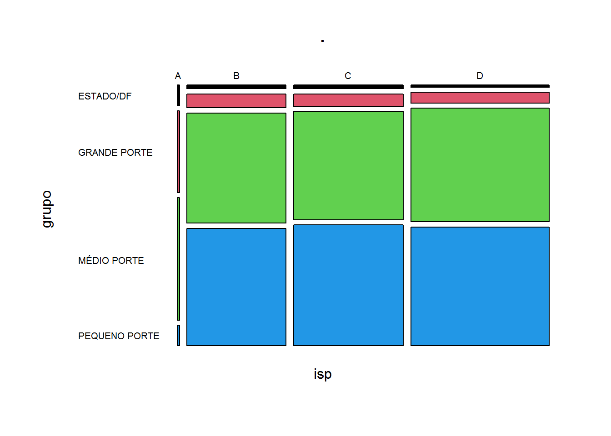
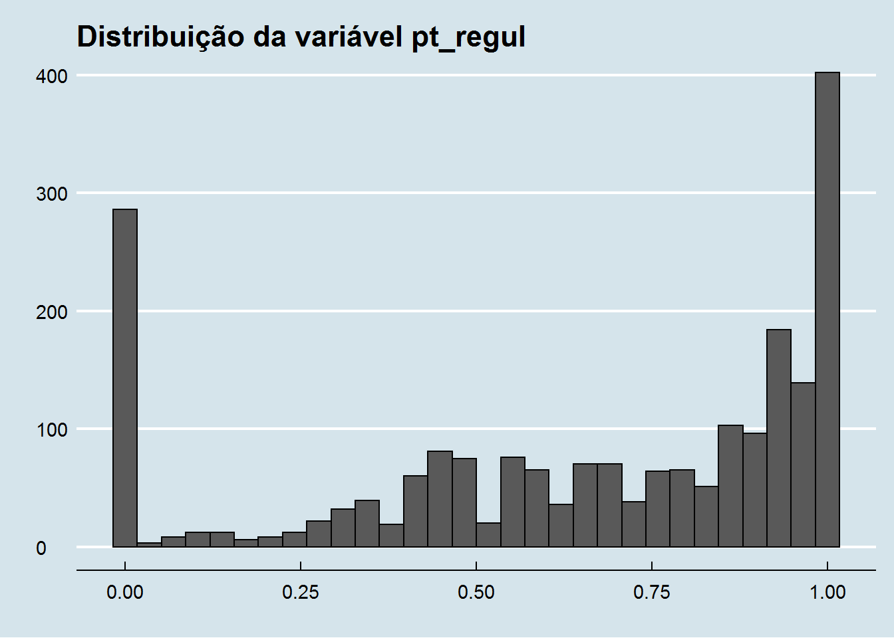
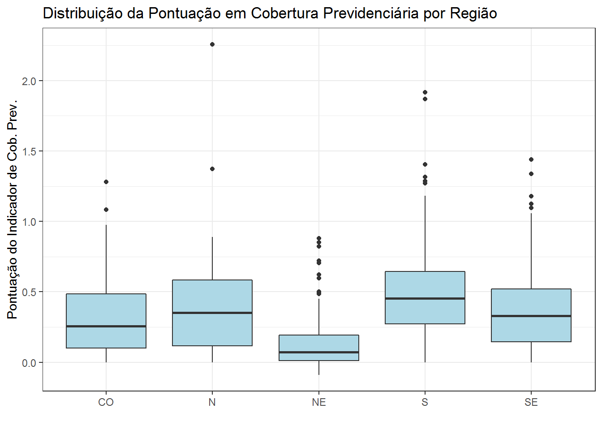
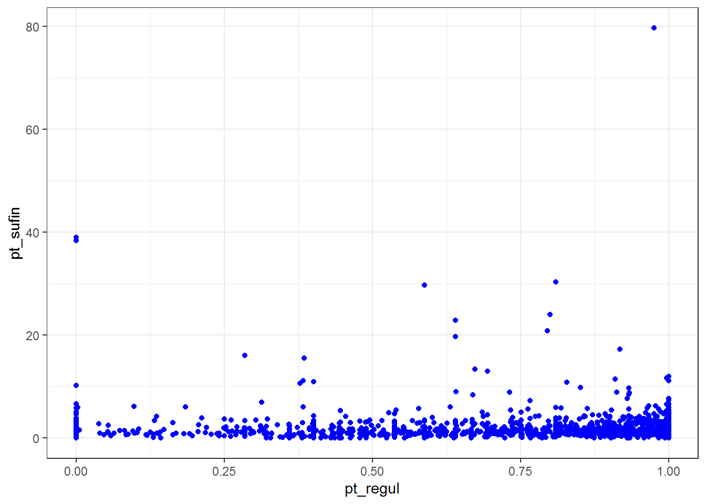
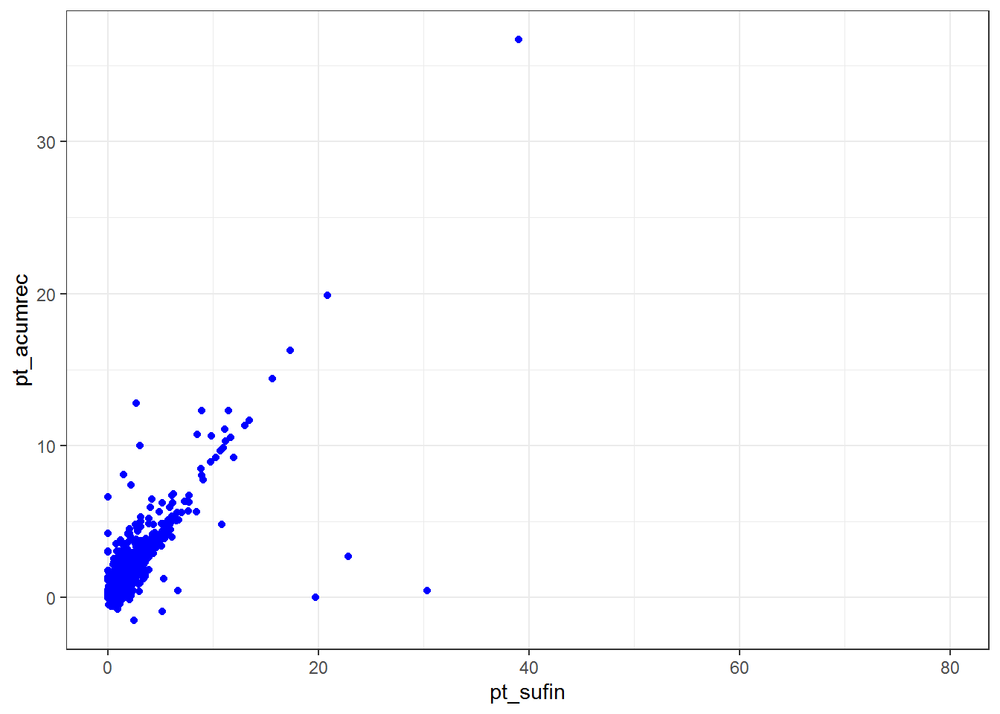
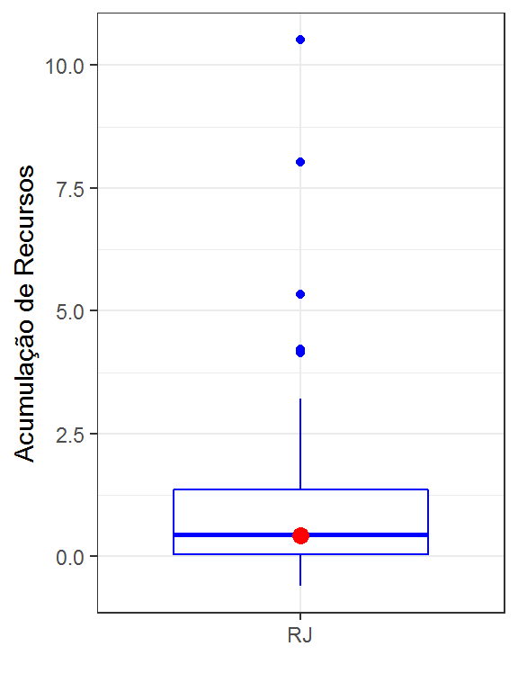
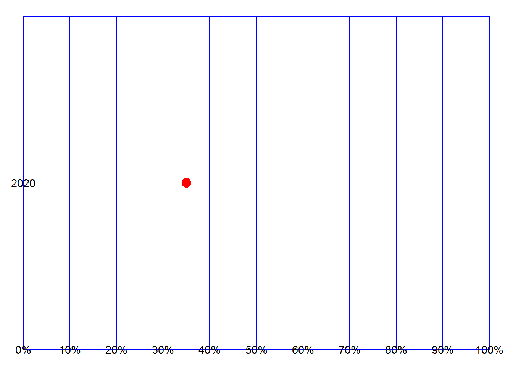

Capítulo 8 ISP - Indicador de Situação Previdenciária
O objetivo deste capítulo é apresentar algumas possibilidades de análise da base de dados do Indicador de Situação Previdenciária - ISP.
A SPREV mantém uma página dedicada ao ISP, na qual o leitor interessado encontrará todas as informações sobre esse indicador.
O ISP foi criado pela Portaria MF no 01 de 03/01/2017 e a primeira composição, metodologia de aferição e periodicidade do indicador foram aprovadas pela SPREV por meio da Portaria no 10 de 08/09/2017 publicada como Nota Técnica SEI no 01/2017/CODAE/CGACI/SRPPS/SPREV/MF de 06/09/2017 com a divulgação do ISP de 2017-01. Posteriormente foram divulgados os dados do ISP 2017-02 e do ISP 2018-01.
A partir do ano de 2019 o ISP foi reformulado, passando a incorporar o perfil de risco atuarial e a utilizar a classificação do RPPS no Pró-Gestão, tendo sido sua periodicidade de divulgação alterada de semestral para anual.
O arquivo contendo os dados do ISP de 2020 (correção de 16/12/2020) possui 9 planilhas, cada uma contendo os dados básicos para o cálculo dos 6 indicadores que compõem cada uma de suas 3 dimensões conforme tabela a seguir:
| Dimensão | Indicador |
|---|---|
| Gestão e Transperência | Regularidade |
| Gestão e Transperência | Envio de Informações |
| Gestão e Transperência | Gestão |
| Finanças e Liquidez | Suficiência Financeira |
| Finanças e Liquidez | Acumulação de Recursos |
| Atuária | Conbertura Previdenciária |
A planilha RESULTADO contém a nota (A, B, C ou D) do ISP para cada RPPS além de outras informações.
A maioria das variáveis na referida planilha são qualitativas referindo-se às notas obtidas pelos RPPS em cada indicador. À exceção do indicador de modernização da gestão, os demais possuem pontuação (variável quantitativa) a eles associados, a partir da qual as notas são definidas.
Inicia-se a análise dos dados do ISP por essa planilha. Posteriormente os dados das demais planilhas (GRUPOS, REGULARIDADE, CRITÉRIOS, ENVIOS, GESTÃO, SUFICIÊNCIA, ACUMULAÇÃO e COBERTURA) serão incluídos nas análises realizadas neste capítulo.
8.1 Importação dos Dados
Faz-se, de início, a importação e limpeza inicial dos dados:
isp20 <- read_excel("dados/ISP2020PLANILHADERESULTADOSREEDIO20201216.xlsx",
na="-", range = 'A2:U2155', sheet="RESULTADO",
col_names = c('ente', 'uf', 'regiao', 'grupo', 'subgrupo',
'ind_regul', 'ind_envioinf', 'ind_gestao', 'nota_gt',
'ind_sufin', 'ind_acumrec', 'nota_fl',
'ind_cobprev', 'nota_at',
'isp', 'perfil_atuarial',
'pt_regul', 'pt_envioinf', 'pt_sufin', 'pt_acumrec', "pt_cobprev"))Inspeção dos dados para verificar se a importação foi feita com sucesso:
Rows: 2,154
Columns: 21
$ ente <chr> "ABADIA DE GOIÁS - GO", "ABADIÂNIA - GO", "ABAETETU...
$ uf <chr> "GO", "GO", "PA", "TO", "MA", "CE", "CE", "MT", "GO...
$ regiao <chr> "CO", "CO", "N", "N", "NE", "NE", "NE", "CO", "CO",...
$ grupo <chr> "PEQUENO PORTE", "PEQUENO PORTE", "MÉDIO PORTE", "P...
$ subgrupo <chr> "MENOR MATURIDADE", "MENOR MATURIDADE", "MENOR MATU...
$ ind_regul <chr> "C", "B", "C", "B", "B", "C", "B", "C", "A", "B", "...
$ ind_envioinf <chr> "A", "A", "C", "A", "A", "A", "A", "C", "A", "A", "...
$ ind_gestao <chr> "C", "C", "C", "C", "C", "C", "C", "C", "C", "C", "...
$ nota_gt <chr> "C", "B", "C", "B", "B", "C", "B", "C", "B", "B", "...
$ ind_sufin <chr> "B", "C", "C", "B", "C", "C", "A", "C", "A", "C", "...
$ ind_acumrec <chr> "B", "C", "C", "C", "C", "C", "B", "C", "A", "C", "...
$ nota_fl <chr> "B", "C", "C", "B", "C", "C", "A", "C", "A", "C", "...
$ ind_cobprev <chr> "B", "C", "C", "C", "B", "C", "B", "C", "B", "B", "...
$ nota_at <chr> "B", "C", "C", "C", "B", "C", "B", "C", "B", "B", "...
$ isp <chr> "C", "D", "D", "C", "C", "D", "B", "D", "B", "C", "...
$ perfil_atuarial <chr> "II", "I", "I", "II", "II", "I", "III", "I", "III",...
$ pt_regul <dbl> 0.00000000, 0.75111111, 0.00000000, 0.89315068, 0.7...
$ pt_envioinf <dbl> 1.00, 0.80, 0.75, 0.80, 0.80, 0.80, 1.00, 0.20, 1.0...
$ pt_sufin <dbl> 1.6648401, 0.5252145, NA, 1.5831008, NA, 0.8395472,...
$ pt_acumrec <dbl> 1.721548843, -0.059724152, NA, 0.575596577, NA, -0....
$ pt_cobprev <dbl> 0.3337950715, NA, NA, 0.2050398757, 0.4221532346, 0...Aparentemente a importação foi bem sucedida. Tem-se 2.154 RPPS e 21 colunas/variáveis.
A primeira questão que pode ser levantada é: a base de dados contempla todos os RPPS? Voltando ao Capítulo 1 é possível ver que existem 2.156 RPPS ativos. Estão faltando 2 RPPS.
8.2 Análise Exploratória Preliminar
Nessa etapa, o objetivo é avaliar se os dados não contém valores discrepantes e obter mais informações sobre os mesmos.
Pode-se iniciar obtendo a distribuição de frequência da variável isp, a nota final do RPPS no ISP.
isp n percent
A 12 0.56%
B 601 27.90%
C 665 30.87%
D 876 40.67%Pela distribuição pode-se ver que é raro um RPPS possuir nota A no ISP. Apenas 12 RPPS em 2.154 conseguiram esse feito. Os demais RPPS estão distribuídos quase que igualmente entre as notas B, C e D.
Muito se ouve falar que municípios pequenos tem mais dificuldades na gestão dos RPPS e por isso talvez não consigam boas notas no indicador. Assim, uma questão que pode surgir é: como o porte do RPPS, indicado na variável grupo, se relaciona com o isp?
Uma tabela de dupla entrada pode ajudar a entender essa relação.
grupo A B C D
ESTADO/DF 1 9 10 7
GRANDE PORTE 4 34 33 36
MÉDIO PORTE 6 270 294 388
NÃO CLASSIFICADO 0 0 0 40
PEQUENO PORTE 1 288 328 405As raras notas A não estão concentradas nos RPPS estaduais, nem nos RPPS de grande porte. A concentração está nos RPPS de médio porte.
Existe um conjunto de 40 RPPS que não estão classificados quanto ao porte e todos tiveram nota D no ISP.
Uma possibilidade de visualização da tabela acima, excluindo-se os RPPS que pertencem ao grupo NÃO CLASSIFICADO é apresentada a seguir:
with(isp20[isp20$grupo != "NÃO CLASSIFICADO",],
table(isp, grupo)) %>%
mosaicplot(color = palette(), las = 1)
O gráfico mostra que ser um RPPS de pequeno porte não parece ser um impeditivo para que a proporção deles com nota B seja parecida com a proporção dos RPPS de médio porte com B. A proporão de RPPS de grande porte com nota B é bem inferior.
Se ser um RPPS de grande porte “facilita” as coisas por ter, em tese, mais estrutura, era de se esperar que estivessem concentrados nas notas A e B, o que definitivamente não ocorre. Deve-se considerar que quanto maior o RPPS, maiores e mais complexos os problemas.
Os RPPS de grande porte estão com a mesma participação percentual nas notas B, C e D. O gráfico sugere não existir dependência entre a nota no ISP e o porte do RPPS; conclusão que deve ser confirmada estatisticamente de uma maneira mais formal.
Os valores da variável perfil_atuarial são dados pela nota do isp.
isp I II III IV
A 0 0 0 12
B 0 0 601 0
C 0 665 0 0
D 876 0 0 0RPPS com nota D, as piores, estão no perfil I, e por aí vai conforme mostra o resultado.
Verificações parecidas podem ser feitas para as demais variáveis qualitativas.
Em relação às variáveis quantitativas, pode-se estar interessado em como elas se distribuem, na relação existente entre elas, se existem valores atípicos, etc.
Para a verificação de valores faltantes ou valores atípicos, um resumo estatístico das variáveis pode revelar informações interessantes sobre os dados:
$pt_regul
Min. 1st Qu. Median Mean 3rd Qu. Max.
0.0000 0.4444 0.7511 0.6507 0.9507 1.0000
$pt_envioinf
Min. 1st Qu. Median Mean 3rd Qu. Max.
0.0000 0.7667 0.8000 0.7713 1.0000 1.2000
$pt_sufin
Min. 1st Qu. Median Mean 3rd Qu. Max. NA's
0.0000 0.8068 1.2728 1.8839 2.1206 79.6843 386
$pt_acumrec
Min. 1st Qu. Median Mean 3rd Qu. Max. NA's
-1.5289 0.1670 0.7612 1.2757 1.7006 36.7115 563
$pt_cobprev
Min. 1st Qu. Median Mean 3rd Qu. Max. NA's
-0.0887 0.1179 0.2990 0.3492 0.5304 2.2584 444 Das cinco variáveis, 3 apresentam uma grande quantidade de valores faltantes, ou seja, não possuem informação sobre a variável. Também é possível ver valores negativos nas variáveis pt_acumrece pt_cobprev, assim como valores máximos muito maiores que os demais valores da variável, sendo possivelmente outliers.
Um histograma pode ser uma boa opção para examinar como os valores de uma variável quantitativa se distribui. Por exemplo, a variável pt_regul:
ggplot(isp20, aes(x=pt_regul)) +
geom_histogram(color="black") +
ggthemes::theme_economist() +
labs(title="Distribuição da variável pt_regul",
x="", y="")
O mesmo pode ser feito com as demais variáveis quantitativas.
Também pode ser útil ver a distribuição de uma variável quantitativa em função dos valores de uma variável qualitativa. Por exemplo, como a variável pt_cobprev se distribui de acordo com a região geográfica a que pertence o RPPS?
ggplot(isp20, aes(x=as_factor(regiao), y=pt_cobprev)) +
geom_boxplot(fill="lightblue") +
theme_bw() +
labs(title = "Distribuição da Pontuação em Cobertura Previdenciária por Região",
x="", y="Pontuação do Indicador de Cob. Prev.")
O gráfico mostra que os RPPS da região nordeste (NE) possuem os menores valores para a varável em questão e estes valores tem menor dispersão que nas demais regiões. A região sul (S) tende a ter os melhores valores da variável.
A relação existente entre variáveis quantitativas pode ser avaliada também mediante a utilização de gráficos. Exemplo: qual a relação existente entre as variáveis pt_regul e pt_sufin?

O que o gráfico diz? Que não existe relação entre as variáveis pt_regul e pt_sufin. Que a variável pt_sufin assume valores no intervalo [0, 1] enquanto a variável pt_sufin assume valores aparentemente no intervalo [0, 80]. A variável pt_sufin parece ter alguns outliers, sendo o mais extremo no valor de aproximadamente 80.
E como seria a relação entre as variáveis pt_sufin e pt_acumrec?

Aqui parece existir uma clara relação entre as variáveis. Valores altos na variável pt_sufin, estão em geral associados a valores altos da variável pt_acumrec. Mas existem 3 RPPS que parecem se destacar dos demais. Apesar de possuirem boa pontuação na suficiência financeira não estão conseguindo acumular. Casos interessantes para uma análise mais detalhada.
Pode ser interessante comparar, por exemplo, a pontuação de um determinado RPPS em relação aos demais RPPS de uma mesma UF ou de mesmo porte, ou ainda, em relação aos RPPS de uma determinada região.
Como um exemplo, suponha que se queira avaliar como o RPPS do município de Queimados no ERJ se compara com os demais RPPS do Estado do RJ com relação à variável pt_acumrec.
Uma forma de fazer isso graficamente é a seguinte:
RPPS <- "QUEIMADOS - RJ"
isp20 %>%
filter(uf == "RJ") %>%
ggplot(aes(x=as_factor(uf), y=pt_acumrec)) +
geom_boxplot(na.rm=TRUE, color="blue") +
labs(x="", y = "Acumulação de Recursos") +
geom_point(y=filter(isp20, ente == RPPS)$pt_acumrec,
color="red", size=3, na.rm=TRUE) +
theme_bw()
O gráfico mostra que o RPPS em questão possui o valor da variável pt_acumrec próximo à mediana. O valor da variável está indicado no gráfico pelo ponto vermelho. Essa metodologia informa em que quartil da distribuição o RPPS possui o valor da variável em análise. Nesse exemplo, o RPPS tem o valor entre o 1o e o 2o quartil. Isso indica que possui o valor da variável em análise superior ao de 25% dos RPPS do ERJ mas inferior ao de outros 50% dos RPPS do ERJ. Aqui, naturalmente, considera-se apenas os RPPS do ERJ que possuem valores para a variável em questão.
Uma outra forma de se fazer essa comparação é com a utilização de decis e vez de quartis. Exemplo:
decis_pt_acumrec <- with(isp20, quantile(pt_acumrec, probs=seq(0, 1, 0.1), na.rm = TRUE))
decis_pt_acumrec 0% 10% 20% 30% 40% 50%
-1.52890427 -0.01867873 0.07118640 0.27262624 0.50022900 0.76118435
60% 70% 80% 90% 100%
1.07716965 1.46587593 1.98980060 3.07705690 36.71148457 Obtidos os decis, verifica-se em qual deles está o valor da variável para o RPPS em análise. O RPPS em questão possui o seguinte valor para a variável pt_acumrec:
[1] 0.4211735Pode-se ver que este valor situa-se no 4o decil. Isto significa que possui o indicador maior do que o de 30% dos RPPS que possuem dados na base mas inferior a ao de 60% dos RPPS.
Um RPPS com indicador no último decil (pt_acumrec > 3.07) está entre os 10% dos RPPS com maior indicador.
A seguir, faz-se uma tentativa inicial de “visualizar” o que foi apresentado acima. O “gráfico” é feito de forma artesanal e precisa ainda de algum polimento.
pct <- names(which(filter(isp20, ente == RPPS)$pt_acumrec <= decis_pt_acumrec))[1]
pct <- as.integer(gsub("0%$", "", pct))
dados <- data.frame(dmin=0:9,
dmax=1:10,
dmeio = seq(0.5, 9.5, 1))
ggplot(dados, aes(xmin=dmin, xmax = dmax, ymin=0, ymax=1)) +
geom_rect(color="blue", fill="white") +
geom_point(aes(x=dmeio[pct], y=0.5), color="red", size=4) +
theme_void() +
annotate("text", x = 0:10, y = 0, label = names(decis_pt_acumrec)) +
annotate("text", x = 0, y = 0.5, label = "2020")
O ponto em vermelho sinaliza o decil em que o RPPS está em relação ao indicador em análise. O gráfico ainda está bem ruim mas será melhorado com o tempo.
Caso se disponha do valor de alguma dessas variáveis para mais de um ano, é possível acompanhar como um RPPS em particular evoluiu em relação aos demais RPPS da UF considerada observando se ele avança ou recua nos decis de ano para ano.
Seria possível, dessa forma, com os dados do ISP de 2019 indicar no gráfico mais um ponto indicando o decil da variável em 2019. Assim, observando os pontos em 2019 e 2020 pode-se ver a evolução do RPPS em relação aos demais RPPS para a variável em análsie.
Acredita-se que os exemplos apresentados neste capítulo podem fornecer algumas ideias iniciais de análise dos dados do ISP. Em revisões posteriores deste documento, serão acrescidos os dados contidos nas demais planihas do arquivo de dados do ISP 2020.